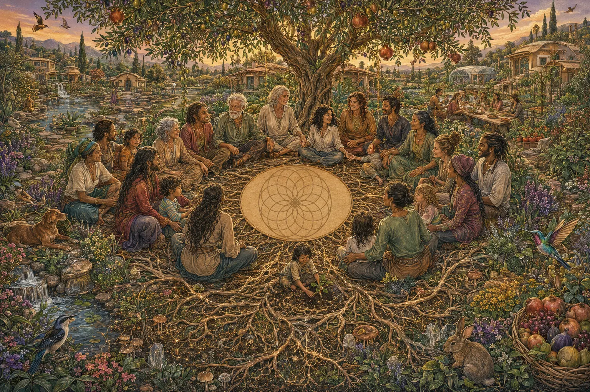

Earth lovers, regenerative educators, permies, yogis, ocean lovers, community builders and lifelong students of life. Dreamers and doers. Always learning. Always evolving. Perfectly imperfect.
Awakening Eden grew from more than ten years of asking one question: how can our lives help life flourish?
Our paths have carried us through Germany, Colombia, Thailand, Indonesia, Australia and Portugal. We did not travel only to pass through. Whenever possible, we stayed, worked and listened long enough to see the inside of a place: its beauty, its daily rhythms, its tensions, its hard lessons and the quiet relationships that keep it alive.
We visited farms, food forests, communities, retreats, gardens, restoration projects and learning spaces. We learned from teachers, growers, elders, practitioners, friends, mistakes and the living world itself. We also kept questioning the status quo—including parts of the “new Earth” world—because a beautiful idea still has to become honest, practical and life-serving in relationship.
There have been seasons of wonder and seasons of deep pain, overwhelm, uncertainty and disillusionment. We have seen how easily people, projects and the Earth can be exhausted when care, clarity and reciprocity are missing. Those experiences did not turn us away from positive change. They made our commitment more grounded.
We are not here because we have perfected a new way of living. We are here because we keep returning to what is true, practical, life-serving and regenerative—and because we believe solutions grow when people are empowered to learn and act together.
Sofia
A gentle strength that helps people feel at home.
Sofia’s journey began in Bogotá, Colombia, within a loving family whose warmth taught her to care deeply for people. Some of her happiest childhood memories were on her grandparents’ farm, among strawberries, mushrooms and the rhythm of the seasons.
She worked in communications and publishing, yet felt that conventional ideas of success were not enough. That longing led her to Australia and into yoga, movement, holistic living, care work, community and long periods close to nature.
Today Sofia brings yoga teaching, embodied practice, retreat holding, hospitality, administration, financial organisation, cooking, content creation and the art of creating warm, welcoming spaces. Her work is not about asking people to become someone else. It is about helping them soften, listen and remember the dignity already within them.
Her thread: inner regeneration, belonging, beauty, care and the quiet intelligence of the body.
Benjy
A lifelong search for solutions that create more life.
Benjy grew up in Germany with a persistent question: how can I genuinely leave the world a little better than I found it? Organic living opened the first door, followed by breathwork, yoga, meditation and a widening curiosity about how healthy systems work.
Travelling through Asia—and diving in Thailand and Indonesia among vast schools of fish—reawakened his sense of the intelligence, abundance and interconnection of life. In Australia, landscapes became classrooms: rainforests, farms, restoration sites, gardens, food forests, coastlines and communities.
He brings hands-on experience in regenerative landscape design, permaculture, syntropic agroforestry, food forests, orchard revival, living soil, water retention, planting, pruning, natural building and practical land care. He also loves research, strategy, education, websites and AI systems that make useful knowledge easier to access.
His thread: read the living system first, then create conditions for water, soil, roots, diversity and people to thrive.
Together
Inner and outer regeneration belong in one conversation.
Awakening Eden weaves our complementary paths: Sofia’s embodied care and Benjy’s land-based systems thinking; human warmth and practical design; intuition and discernment; ancient questions and present-day evidence.
We share what we are living and learning—not a polished guru story. We honour practice over perfection, honest questions over certainty, and relationships over extraction.
Learning to listen—to the land, and to each other.Perfectly imperfect, and still walking.

From our journey to a wider circle. We are calling in aligned friends, partners and co-creators who want to help life flourish.
The vision we are tending
Regeneration as a way of life.
We dream of a living village and learning place where healthy soil, restored water cycles, food forests, meaningful community, inner wellbeing, ethical livelihoods and affordable belonging are woven together.
Awakening Eden is the first seed: a Living Library, a meeting place and a practical pathway for learning how to care for land, ourselves and one another.
Over time, we hope to co-create a regenerative village, healing and learning centre where people can restore landscapes, grow food, learn useful skills, move, breathe, share meals, create beauty, care for children and elders, and experience what becomes possible when a culture serves life.
We are calling in aligned partners, co-creators, friends of Earth, ethical funders, land stewards and experienced community builders. The land and full village do not exist yet; the Living Library, guides and land work do. We will describe ownership, governance and finances plainly as real structures take shape.
Life thrives through connection, reciprocity and care.
Earth care
Build soil, hold water, protect biodiversity and leave places more alive.
People care
Human dignity, wellbeing, learning and belonging are part of regeneration.
Shared abundance
Cycle resources, share knowledge and create enoughness rather than extraction.
Curiosity over certainty
Keep learning, test ideas and honour evidence alongside lived experience.
Practice over perfection
One honest regenerative action matters more than perfect ideology.
Living geometry & frontier science
Wonder with discernment.
Nature is full of pattern, form, rhythm and self-organisation. We follow this research with wonder—and keep scientific findings, practitioner insight and spiritual meaning clearly distinguished.
About our Lotus. The exact twelve-fold Lotus of Life is Awakening Eden’s chosen symbolic geometry: twelve equal circles centred every 30 degrees on one orbit, each passing through the common centre, plus an enclosing circle. We use it poetically for relationship and emergence. It is not presented as proven medicine, DNA activation or measurable frequency science.
These sources help us learn from genuine research. Any spiritual interpretation remains a worldview, not a conclusion of the cited science.
Walk beside us.
The circle is open.
We are learning, planting, building and documenting Awakening Eden as it grows. Come exchange ideas, share the journey and help turn beautiful possibilities into grounded action.